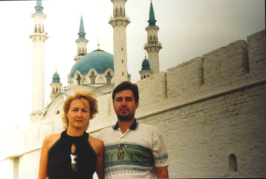

Ночь спали плохо, кусали комары, а может быть просто волновались перед поездкой. Встали в 4-15ч., за окном темнота, звезды на небе. Взяли с собой еды, сами перекусили и в путь. Сережке сразу постелили на заднем сиденье и он через 10 минут уснул.
Выехали из Усолье-Сиб. в 5-30час. Дороги, относящиеся к городу, ужасные. Видимо мэр давно уже не выделяет денег на ремонт. Как только выехали за пределы города, дороги заметно улучшились. Сначала ехали с фарами. Из-за загруженного багажника наш ближний свет многие принимали за дальний, и поэтому возмущенно моргали. До Черемхово дорога знакомая, дальше я никогда не ездила, но ландшафт абсолютно такой же. Начало всходить солнце. Местами проезжали очень густой туман, он был возле рек. Вокруг поля с перелесками и синее-синее небо с розовыми (от восходящего солнца ) облаками- полосками. Красота!!!
Проезжали Кутулик, оказывается довольно огромная деревня. Рядом березовая роща, все деревья наклонены в одну сторону, многие лежат на земле - последствия урагана.
Ближе к Тулуну начинаются огромные разрезы, только так и не поняли что в них добывают. Дорога более-менее сносная. Бензин дешевле, чем в Иркутске на 20-50 копеек, в Иркутске 16 руб. 95-й.В среднем идем 100, иногда 80 км.час. Проехали Тулун, а вместе с ним кучу иномонтажек и магазинов запчастей.
После Тулуна - дорога полное дерьмо!!! Это я пишу уже после того как мы проехали весь путь. Дороги хуже потом нигде не было! Местами идет гравийка, она кажется даже лучше, чем дорога, которая идет дальше. Метров 40-60 асфальт, потом или яма во всю ширину дороги или участок гравийки. Замучились от постоянного торможения и дерганья. В Нижнеудинске остановились на заправке, перекусили (и все остальное). Пока ехали было не жарко, а потом, когда остановились решили немного раздеться. Кстати бензин на заправке был по 16-30руб., в Иркутске заправились по 16 руб. На других заправках Нижнеудинска вообще был по 15-60руб.
На протяжении всей дороги проезжали кучу деревень, выглядящих примерно одинаково: покосившиеся избушки, гуси, шагающие вдоль дороги, вечножующие коровы и 1-20 человека в зоне видимости. Проезжали трактир «От заката до рассвета», «Дом досуга» (не путать с публичным домом!). Видимо «домом культуры» назвать этот сарайчик не поднялась чья-то рука.
Короче почти до Канска была мерзкая дорога (то ямы, то асфальт, то гравий). После Канска пошла хорошая дорога. Думали, что при подходе к Красноярску встретиться кемпинг, в котором и собирались остановиться, но так ничего и не встретили. Зато чуть не попали в аварию. Впереди нас шла «фура», а так как дорога была в горку, то шла она очень медленно. Справа, обогнав нас, ее обгоняет «Жигуленок». Сашка тоже решает обогнать ее справа. Когда мы почти поравнялись с кабиной водителя, он решает посторониться правее, уступая кому-то дорогу слева. Мы чуть-чуть не скатились в кювет. Зад нашей машины начал сползать, но Сашка сильнее нажал на педаль газа и мы выскочили перед мордой «фуры» буквально в последний момент. Короче было очень страшно, после этого случая решили, что справа обгонять больше не будем.
Еще было два момента, когда я хваталась за ручку коробки передач. Ведь я сидела на «водительском» месте. Я переключала на нейтралку, а Сашка в этот момент жал на газ, обгоняя какую-то очередную машину. Машина ревела, но скорость не набирала. После того как мне чуть не связали руки, я успокоилась.
Короче, не встретив кемпинга, въезжаем в Красноярск. Поплутав по улицам, подъехали к какой-то автомобильной стоянке. Сторож подсказал нам подходящую недорогую гостиницу. Называется «Березка», адрес не запомнили, но находиться где-то возле ТЭЦ. Это была пром. зона Красноярска, а это нам было удобно. В город особенно не углублялись, поэтому выезжать было легче, ведь карты Красноярска у нас с собой не было. Номер 2-х местный - 420 руб. В номере все удобства: телевизор, холодильник, полотенца и т.д. Короче, как в нормальной гостинице за 700 руб. Спали как убитые.
Из Красноярска выехали в 7-30 местного времени. Позавтракали в гостинице лапшой и помидорами, которыми нас снабдили в Усолье. Проверили состояние машины, оттерли размазанные трупы насекомых. Один номер чуть-чуть испортился, под скотч попала вода, и фломастер немного расплылся. Снимать не стали, так как замажется грязью и потом не заметно будет. Насчет номеров поясняю: сделали номера на картоне, они выглядели как настоящие, правда пришлось над ними потрудиться почти 2 часа. На картоне нарисовали наши транзитные номера, потом заклеили скотчем, чтобы не развалились от дождя, и повесили их на место обычных номеров. Издалека было очень похоже. Настоящий транзитный номер прикрепили к солнцезащитному козырьку и опускали перед ДПС. Выехали из Красноярска без проблем. Опять те же пейзажи. Проезжали деревни «Сухая», «Конторка», реку «Рыбная», трактир «Вдали от жен», «Горячие пышечки», насел.пункт «Козулька» и Козульский район (в Красноярском крае).
От Красноярска полным ходом до Кемерово, шли около 120 км.час. Вокруг очень красивые места. Обгоняли только перегонщики, так как ехали на пустых машинах, а у нас был перегруз. Не доезжая до Кемерово, остановились перекусить, пока обедали, возле машины крутился подозрительный тип, говорящий по телефону, который потом уехал. Это нас конечно напрягло, но ничего, вроде обошлось. Доехали до Кемерово. Перед городом привязались за дальнобойщиком, хотя указателей полно, могли бы и сами проехать город. Город нормальный и дороги тоже. От Кемерово до Новосиба дорога почти отличная, поэтому я была удостоена чести взяться за руль и понажимать на педали нашего недавно приобретенного сокровища. До Новосиба доехали без проблем, не считая 2-ух: 1-ая - я не вижу дороги, и 2-ая- не умею управлять машиной J. Не доезжая Новосиба передала сокровище в более надежные руки. Новосиб прошли по карте, которую я купила в командировке, где-то за месяц до поездки. Что характерно для Новосибирска - множество кольцевых развязок. Причем если перед кольцом стоит указатель прямо, это не значит что дорога находиться на прямой линии относительно предыдущей дороги. Вобще-то указатели есть по всему городу, поэтому город хоть и большой, но пройти можно. После Новосиба мы едем по трассе №51 (на Омск). Остановились под Барабинском (деревня), не доезжая до Омска 300 км. Остановились в кемпинге, по 150 руб с человека. Есть душ - за отдельную плату-30 руб с чел.. Сходили все в душ, стало полегче, ведь с момента как выехали стоит жара +28 град.. Хорошо ехать утром, пока солнце еще не очень сильное, самое тяжелое, это вечер. Едем прямо на закат, глаза и так уже устали, а тут еще солнце прямо в глаза слепит и через стекло (которое все в трупах насекомых) ничего не видно. Короче помылись, перекусили и легли спать. Спали как убитые.

Выехали в 8 утра, как обычно. Дорога, как взлетная полоса, ровная и гладкая. Шли 140 км/час. Ближе к Омску стала похуже. Что интересно, до самого Омска не было никаких населенных пунктов, сразу начался город. Когда съезжали с виадука, у нас была скорость 80 км/ч, а стоял знак с ограничением скорости 70. Продавец полосатых палочек нас все равно остановил и сказал, что в населенном пункте скорость не больше 60. Короче выписал квитанцию. По городу проехали нормально, так как была карта. Вышли на трассу до Тюмени. При выезде из г.Омска, на посту ДПС нас остановили и начали проверять все, что можно (аптечку, огнетушитель, и т.д.). Заглянули в багажник, про номер ничего не сказали, потом спросили страховой полис (хотя по-моему для транзитников он не обязателен), Потом сверяли номера двигателя и др. частей машины и в довершение пошли пробивать по компьютеру. Короче в результате мы их сильно разочаровали, судя по их лицам. В сторону Тюмени ехали до Ишима, где мы остановились пообедать. Нам посоветовали ехать не через Тюмень и Екатеринбург, а свернуть с Ишима через Бердюжье и Чистоозерье выйти на Уфу, так сокращается около 300 км. Кстати дорога, как только началась Тюменская область резко началась хорошая. Через Бердюжье- дорога, одни кочки, но без ям. От Ишима до Кургана я сама была за рулем. Недостаток тот-же : «не вижу дорогу» J. Вечером остановились в кемпинге на объездной Кургана. Остановились в «Сибирских воротах». Неплохой кемпинг. Огромная стоянка с кучей фур. Дальнобойщики все ночуют в своих машинах, они кучкуются от бандитов и чтобы было где покушать. Видели фуру с машинами(штук 14) на дороге, так она сгорела вся и все машины, которые были на ней.
За руль сразу села я. Выехали как обычно в 8 часов. Дорога до Челябинска была нормальная. Сашка берег силы на дорогу от Челябинска до Уфы (перевал через Урал). На самом деле так и получилось, дорога была не из легких, примерно как до Слюдянки- это радом с Байкалом ( по 1 полосе в каждую сторону и фуры, собирающие за собой кучу машин («хрен обгонишь» называется). Зато виды!!! Красота!!!!! Возле некоторых кафешек стояли муляжи машин ГИБДД. Они были в натуральную величину, поэтому издалека, видя эту машину, водилы притормаживали, а этого как раз и добивались местные «Остапы Бендеры». С самого начала дороги через Урал начали встречаться рынки, где продавали все резиновые изделия (кроме презервативов разве что), начиная с резиновых лодок и бассейнов и заканчивая ластами. Этих рынков было очень много! Потом, после Сима, они превратились в медовые рынки. Мед продавался разный: липовый, гречишный, и т.д., сортов было много. Мы купили себе 3-х литровую банку гречишного, по 100 руб за кг.
Урал закончился. До Уфы гнали по равнине. Это была уже Башкирия. Километров за 30-40 до Уфы стали попадаться люди с полосатыми палочками. Их было столько, сколько мы еще не видели! Они стояли через каждые 3-5 км. Только вблизи Уфы оставили 250руб штрафа. Везде ограничения по скорости, а дорога отличная, вот и превышали. Уфу проходили очень трудно, так как указателей совсем не было. Сначала ехали по «солнцу», а потом стали спрашивать дорогу у местных, в результате все-таки выехали. Потом ехали по Башкирии, очень понравились их деревеньки - чистенькие, аккуратные, добротные. Дома или из белого кирпича или покрашены в веселенькие цвета. Еще обратили внимание, что много надписей осталось с советских времен, типа «Мир, труд». Вдоль дороги много полей пшеничных, гречишных и др. Так вот посреди этих полей стоят по 6-10 нефтяных вышек, точнее насосов, которые качают нефть!!! Нас это просто сразило и мы сфотографировались рядом с ними. Так как Уфу прошли около 15 час, решили ехать дальше на Казань. По дороге на Казань остановились в гостинице пос. Верхояровка. Сначала искали кемпинг, но не нашли, пришлось заехать в поселковую гостиницу. Она оказалась очень небольшой, и нам показали 3 номера на выбор: люкс, полулюкс и обычный. Такого я еще не видела! Обычный номер, обои на стенах местами отваливаются, 2 кровати с солдатскими одеялами и все. Люкс отличался от полулюкса только наличием дивана и телевизора. В туалете в обоих номерах были только раковина с 1 краном хол.воды и унитаз! И никакого намека на душ, не было даже сливного отверстия. Заплатили за это удовольствие 540 руб! Местное население между собой разговаривает на башкирском языке. Машину пришлось загнать местному дедку во двор, видимо он на этом и живет. Дедок взял за караул нашей машины 50 руб.
Выехали в 7 часов. Дорога на Казань шла хорошая, но потом доехали до участка, где шли ремонтные работы и пришлось ехать в объезд. Объезд был большой через села. Мы поехали и видимо где-то не там повернули, тем более что указателей было всего 1-2. Короче километров 100 лишних проехали. Наконец выехали на трассу и гнали до Казани. Въехали в Казань около 13-30 час. Решили сначала посмотреть Кремль, поэтому двинулись в сторону центра. Улочки узкие поэтому пришлось постоять немного в пробках. В Кремле побродили по внутренней территории, посмотрели мечеть, но туда еще не пускали. Она еще достраивается и очень красивая. Потом мы решили поехать к Гуле (подруге), она живет в Казани теперь.
Заехали в магазин, купили тортик, вино и покушать. Хотели еще купить карточку на телефон, но оказалось, что у них местная связь, а карточек МТС не было. У нас со связью была просто беда. Ехали по трассе или по объездной, поэтому карточек негде было купить, а у нас на телефонах по 0,5$ всего было. Поэтому экономили, никому не звонили, а если звонили нам, то отвечали в режиме телеграфа.
Нашли Гулькин дом, там была Зульфия(подруга из Иркутска) - готовила покушать. Новый Гулькин муж затопил для нас баню. Пока ждали баню, все собрались. Решили сначала выпить, а потом помыться. Разговаривали, рассказывали про дорогу и т.д., короче хорошо посидели. Легли в 1 час ночи.
Встали в 5:30 утра. В 6:30 выехали. Зульфие все не верилось, что едем в Москву. Выехали из Казани. Дорога нормальная. Перекусили в какой-то восточной забегаловке, очень жирно и большие порции. Потом ехали до Москвы примерно 70-80 км/час, так как один населенный пункт плавно переходил в другой и куча гаишников. На МКАД выехали где-то около19 час. И попали в пробку! Как было обидно, что проехав около 5 000 км застряли в нескольких километрах от дома! Короче через 1,5 часа были дома, правда сначала заехали за Майкой(нашей кошкой) к нашим друзьям и 22 были уже дома!